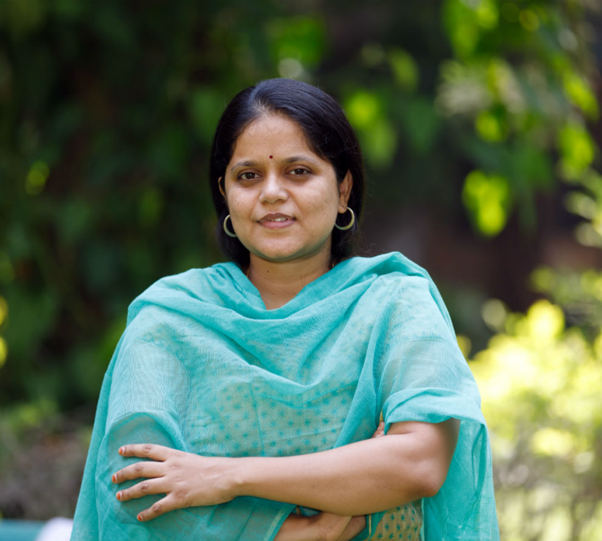

Dr. Bhavana Kanukurthi
Keynote TalkProfessor
Indian Institute of Science (IISc), Bengaluru
Profile
Dr. Bhavana Kanukurthi is a Professor in the Department of Computer Science and Automation at the Indian Institute of Science, Bengaluru. A cryptographer, her research explores foundational questions in cryptography and its connections with coding theory, game theory, and usability. She completed her doctoral studies at Boston University, where her dissertation received the Department of Computer Science Research Excellence Award.
Talk Title: The Good, the Bad and the Rational: A Cryptographer's Dilemma
Cryptography lays the mathematical foundations of secure communication and is often treated as a perpetual battle between the good guys and the bad guys. In this general audience talk, using auctions as a test-bed, we strive to make a case for deviating from this characterization and viewing parties as rational agents instead. The talk will be technical in nature, with the final part dedicated to sharing advice and tips for students on conducting research in the AI era.